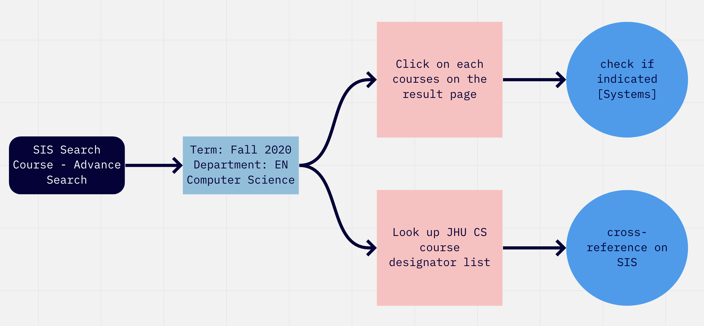
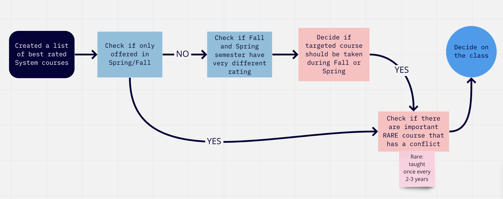

Sequential Model
Task 1

Task 2

Task 3

An improved version of SIS
SIS is used by JHU student to register classes and degree audit.
However, many information that are helpful for students to choose courses are missing.
This becomes particularly problematic when those information are official information provided by JHU, for example course area designators for each major, course evaluations and last but not the least: degree-required courses that are not offered every semester.
If these information are missing in the SIS, it does not only affect student's chance to optimize the course interest, but also could potentially jeapodize student's course planning or even graduation planning.
Pre-med JHU senior who is not familiar with JHU CS department's requirement
Find all computer science courses under the course area of system that are offered in Fall 2020.
The User went under the registration tab, select search ourses, and then select the advanced setting. The user selected Fall 2020 for course term and tried to find the computer science department under the specific department dropdown menu.
The page then reflected couple pages of computer science major courses, and the user clicked on the Computer Network course details, and found that on the bottom on the course description paragraph, the course area designator is simply indicated as [Systems], which later turned out to be a legacy label.
The User found it painful, or impractical, to click through pages of courses and locate each area designator. Therefore the user googled the designator for JHU CS, and on the JHU CS official website, the user found the available courses offered in Fall 2020.
Pick which system course to take in Fall 2020
The User wanted to make a system course selection based on different course evaluations.
The User first visited the semester.ly website and the system course list on JHU website. After cross-referencing both website, the user try to find course evaluations of each system course on semester.ly by typing in the course name. However, not all course evaluations are available, even for certain very basic courses like computer network.
The User then googled the JHU course evaluations for each year, and search for each course rating and evaluation manually. The User only checked the Spring 2020 evaluations and gave up on further searching due to the cumbersome process. However, not all system courses offered in Fall were offered in Spring.
Optimize the course planning for system course based on degree requirement, availability and rating
The user checked the rating for different system courses between different semesters. The User also paid special attention to courses that is only offered in Fall semester.
The User noticed a course A that is only offered once every 3 years, and have a conflict with the course B the user planned on taking. The user decided to take course A for this semester and course B in the future.